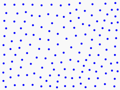
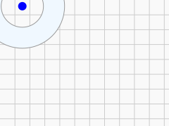
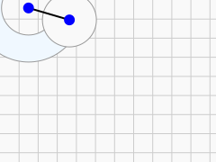
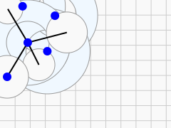
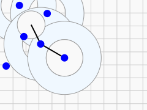
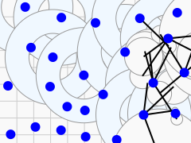
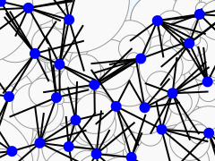

[DRAFT]Placing Points: Fast Poisson Disk
Contents
Motivation
In videogames and computer graphics, we often want to distribute things throughout a region. For instance, you don't want to place every tuft of grass in a field by hand. Depending on how you approach it, there are a couple of pitfalls you could fall into! A regular grid looks overly artificial, looks very different at different viewing angles, and can cause undesirable interference patterns (Moiré patterns). Using random numbers naively leads to clustering with some regions densely packed and others sparse.
What we'd prefer is a balance between the clumpy chaos of pure randomness and the unnatural order of grids. The points should look evenly spaced when viewed at large scales, while still not falling into an obvious pattern at small scales. Distributions meeting these criteria are sometimes called "blue noise."


Colors of Noise
Color of noise is a concept from signal processing in fields such as audio engineering and electronics. The name is an analogy with visible light: a way to characterize the data according to how much its energy is in different frequency ranges. White noise is probably the most familiar color of noise. It is so named because, like white light, it has a flat power spectrum. No frequency range dominates the others. Red is at the low end of visible light frequencies, and blues and violets at the high end. When higher frequencies dominate, we call it blue noise.
In the case of, say, a procedurally generated forest, we want a relatively even density of trees, so that no large areas of the forest look much different compared to another large area. That means we want low or even zero power at low frequencies, leaving the high frequencies. Blue noise!


It might seem odd to think of frequencies and power spectra when we are trying to plant some virtual trees. And it probably should! These concepts are usually about some value changes over time, not a set of discrete points. It would be reasonable to think of the name "blue noise" as just metaphorical. There is a rigorous mathematics to it, though, and it is even possible to generate a point set based on a power spectrum[2], but as far as I am aware, those methods require iterating over the data many times in a way not particularly suitable for real-time uses like a videogame. Color of noise is a useful tool for analyzing a distribution, but for creating them, we'll approach the problem from a different angle.
Possible Approaches
Fast Poisson disk sampling is the main approach I will present here and the one I would recommend in most cases. It comes from a SIGGRAPH paper by Robert Bridson[3]. I'll mention a few others first, though, because they are interesting, too.
Jittered Grid
In a way, a regular grid is close to what we want. The points are very evenly spaced; the problem is that they are too evenly spaced. What if we took the points on that grid and randomly pushed them around a bit? That's the jittered grid technique. In my experiments with it, while it certainly improves on both pure white noise and on a regular grid, it has more problems with clustering and anisotropy (non-uniformity in different directions) compared to the other approaches I discuss here. It is very fast, though, and may be close enough for many use cases!


Dart Throwing
We can just "throw darts" at the region and use those points. By which I mean that for each coordinate of a point, we just take a uniform random variable scaled to match the size of the region. This generates a white noise point distribution with the clumping and gapping problems as seen at the top of this article. But if during that process we reject darts that land within some radius of other darts, the revised process gives us much better results. The cost is that we potentially need to throw many more darts to find valid ones as density increases.

Mitchell's Best Candidate
Mitchell's Best Candidate algorithm is a variation of dart throwing. Instead of throwing darts one at a time and rejecting them, we throw in batches and keep only the best dart of each batch. "Best" in this case means the candidate whose distance from its nearest previously accepted point is greatest. This can become quite slow as the number of accepted points grows, but it does produce good results.

More Exotic Approaches
People have come up with many ways to do this with various advantages and disadvantages. Tile-based methods make a library of smaller distributions of blue noise and then combine them to fill larger regions. An aperiodic tiling can be used as the basis for the points. Points generated by other methods can be "relaxed" to produce a smoother distribution.



Fast Poisson Disk Sampling
Overview
The fast Poisson disk method by Bridson seems to have become the most common approach. The "Poisson disk" part of the name refers to distributions with a hard minimum distance between points, enforcing our "no clumping" criterion. Confusingly, this is distinct from a "Poisson distribution", which is more like white noise. Both are named after Siméon Denis Poisson. The "fast" part comes from a few clever tricks it uses to perform well (linear time in the number of points generated) yet still produce high-quality results: a spatial grid, and an "active list" that guides the choice of candidate points.
I'm going to be over-explaining it here in case that helps a beginner programmer implement it, but Bridson's paper managed to explain it in barely a page.
The process goes like this:
- Randomly choose a seed point to start from and add it to the grid and active list.
- Choose a test candidate at a distance between
min_distand2 * min_distfrom an active point. - Using the grid to narrow down the search quickly, find the accepted point nearest the candidate.
- If it is at least the minimum distance away, accept that new point, adding it to the grid and active list.
- If it is nearer than the minimum distance, then go back to choosing a test candidate. Up to limit on the number of attempts.
- If the limited number of attempts is exceeded, remove that point from the active list.
- If we haven't yet produced enough points and there are still any active points, choose a new active point and go back to choosing a candidate from around it.
- If we have generated the target number of points or there are no more active points, we are done.
Data Structures
The Pt type is just two floats, x and y, for a point's coordinates.
code
/** a point in two dimensions */
typedef union Pt {
float raw[2];
struct {
float x;
float y;
};
} Pt;Internally, the algorithm must maintain a grid structure and list of active points. The FpdState combines those, the settings, and the output into one package for convenience.
code
/** everything we need to track as we step the algorithm */
typedef struct FpdState {
Pt *buf;
size_t buf_size;
float width;
float height;
float min_dist_sq;
size_t max_tries;
size_t max_points;
size_t count;
/**
* Grid: index by `(row * num_cols) + col` to get a pointer to the first
* of the pair of coords for the point in that grid square or NULL
*/
Pt **grid;
/**
* cell size chosen to make sure no more than one point can fit in a cell.
* Should equal the minimum distance between points divided by the square
* root of the number of dimensions.
*/
float cell_size;
size_t num_rows;
size_t num_cols;
/* each item in the list points to the first of the coords for a point */
Pt **active_list;
size_t list_len;
} FpdState;Inputs to the Algorithm
Our fast Poisson disk function takes the following inputs:
buf, bufsize |
A pointer to where the generated points can be stored, and how many can be stored there. This sets an upper limit on how many points the function will generate. |
width, height |
The size of the region. |
min_dist |
The minimum allowed distance between points. |
max_tries |
A maximum number of consecutive candidate rejections before a point is removed from the active list. 30 is a common value for this parameter. |
out_num_points |
Will be set to the number of points written to buf. |
code
int fast_poisson_disk(
Pt *buf,
size_t buf_size,
float width,
float height,
float min_dist,
size_t max_tries,
size_t *out_num_points
) {
Step 0. Initialization
To get started, we must initialize those data structures. We've initially generated zero points, so out_num_points is set right away. The rest of initialization is handled in the fpd_init function.
code
int fast_poisson_disk(...) {
/* early out: if asked for nothing, do nothing */
if (buf_size < 1) {
return 1;
}
*out_num_points = 0;
FpdState fpd = {0};
if (!fpd_init(
&fpd,
buf,
buf_size,
width,
height,
min_dist,
max_tries)
) {
fpd_cleanup(&fpd);
return 0;
}
...Initialize the grid
If we can guarantee that we won't need more than one point in a grid cell, then each cell of the grid can be just a single pointer to the contained point or NULL. We can guarantee this by setting the diagonal of each cell to the minimum distance between points, so that wherever in a cell the point is, the whole cell is within that distance. The side length of such a cell is equal to that distance divided by the square root of the number of dimensions. From that, we can calculate the number of rows and columns and allocate the space for our grid.
code
static int fpd_init(...) {
...
const float cell_size = min_dist / sqrt((float)FPD_DIMENSIONS);
const size_t num_rows = (size_t)max(1, ceil(height / cell_size));
const size_t num_cols = (size_t)max(1, ceil(width / cell_size));
fpd->cell_size = cell_size;
fpd->num_rows = num_rows;
fpd->num_cols = num_cols;
fpd->grid = calloc(fpd->num_rows * fpd->num_cols, sizeof(fpd->grid[0]));
if (NULL == fpd->grid) {
return 0;
}
...Initialize the list
To keep things simple, I am allocating the maximum amount of space that the active list could need all at once up front. In practice, sometimes you won't generate that many points, and even if you do, they won't usually all be active at once, so there may be benefits to starting smaller and only increasing the buffer size as needed. For this example implementation, I am allocating based on a worst case of either the size of the output buffer or the number of grid squares, whichever is smaller. The initial length of the list is zero.
code
static int fpd_init(...) {
...
/* allocating here for worst case. you may prefer to start smaller and resize as needed */
const size_t max_points = min(buf_size, num_rows * num_cols);
fpd->active_list = calloc(max_points, sizeof(fpd->active_list[0]));
if (NULL == fpd->active_list) {
return 0;
}
fpd->list_len = 0;
...Step 1. First Sample

The first step is to insert one seed point from which the rest of them will eventually be generated. There's no special reason for it to be in any particular place, so this code just chooses it uniformly in the available region. A couple of supporting functions appear in this snippet as well: the fpd_randrange function chooses a value uniformly in the provided range and fpd_insert updates bookkeeping for a newly accepted point.
code
int fast_poisson_disk(...) {
...
if (!fpd_insert(&fpd, (Pt) { fpd_randrange(0, width), fpd_randrange(0, height) })) {
fpd_cleanup(&fpd);
return 0;
}
*out_num_points = fpd.count;
...
}
static float fpd_randrange(const float min, const float max) {
return min + (max - min) * ((float)rand())/((float)RAND_MAX);
}
/** add a new point with all its bookkeeping. returns nonzero if successful */
static int fpd_insert(FpdState *fpd, Pt p) {
if (NULL == fpd) {
return 0;
}
if (fpd->count >= fpd->buf_size) {
return 0;
}
/* write coord data */
Pt *dst = &(fpd->buf[fpd->count]);
*dst = p;
/* insert into grid*/
size_t row = (size_t)floor(p.y / fpd->cell_size);
size_t col = (size_t)floor(p.x / fpd->cell_size);
size_t index = row * fpd->num_cols + col;
if ((index > fpd->num_cols * fpd->num_rows) ||
(NULL != fpd->grid[index])
) {
return 0;
}
fpd->grid[index] = dst;
/* insert into active list */
fpd->active_list[fpd->list_len++] = &(fpd->buf[fpd->count]);
/* advance */
fpd->count++;
return 1;
}Step 2. The Loop
Then, for as long as we still have points in the active list and the output buffer has room, we do the following. If there are no more active points, we'll jump to step 3 to finish up.
2.1 Choose an active point
Choose a point from the active list. Bridson chose one at random, but my results seem fine just taking the most recent one. It simplifies removing it later if we know it is the last.
Using the active list here helps us choose new candidate points only in regions that are more likely to have room for new points, when compared to other techniques like Mitchell's best candidate or dart throwing.
code
static int fpd_step(FpdState *fpd) {
...
Pt cur = *(fpd->active_list[fpd->list_len - 1]);
...2.2 Test new points in an annulus surrounding that point
An annulus is the doughnut-shaped region bounded by two concentric circles.

Tracking the number of attempts, choose a candidate point uniformly from at least min_dist away and at most 2 * min_dist away.
By choosing a candidate that is a minimum distance away, we ensue we won't immediately reject it for being too close to the chosen active point. Varying the distance and angle prevents us from generating patterns with too much regularity.
There is some nuance here to make sure that we don't choose the candidates with a bias toward the active point. The simplest way to choose the candidate would be to take an angle uniformly between zero and two pi and a radius uniformly between min_dist and 2 * min_dist. Notice, though, that lower radii correspond to a smaller circle of possibilities than larger radii, but will be chosen just as often on average. That means candidates nearer the active point will be a bit over-represented. To choose a point in an unbiased way, we need the probability of choosing a radius to be proportional to that radius, not uniform. The way the math works out, we can do that by choosing the square of the radius uniformly. We can then take the square root of that to get a radius that chooses points uniformly in the annulus. That said, the naive, biased approach way produces acceptable results, too.
code
static int fpd_step(FpdState *fpd) {
...
size_t tries = 0;
while (tries++ < fpd->max_tries) {
Pt candidate = fpd_random_from_annulus(cur, fpd->min_dist_sq);
...
/* Given a point `p` and the square of the minimum radius,
uniformly select a random point in an annulus
centered on `p`, with an inner radius equal to the
minimum radius and an outer radius twice the minimum radius. */
static Pt fpd_random_from_annulus(const Pt p, const float min_r_sq) {
float TAU = 2.f * 3.14159265358979323846;
float a = fpd_randrange(0, TAU);
float r_sq = fpd_randrange(min_r_sq, 4.f * min_r_sq);
float r = sqrtf(r_sq);
return (Pt) {
p.x + r * cosf(a),
p.y + r * sinf(a)
};
}2.3 Distance test
We then either accept the candidate point or reject it. To do this quickly, we can first find which row and column of our grid it would fall into by simply dividing the coordinates by our cell size. If the row or column is outside of the grid, we can reject the point before we even consider previous points. Otherwise, we look at what points we placed in nearby grid cells. Based on our chosen cell size, any previously accepted point within the minimum distance of the candidate would have to be in a grid cell within 2 grid cells of the one the candidate would go into, at least in this two dimensional case. Since each grid cell can have at most one accepted point, we have a constant upper bound on the number of distance tests we could have to make per candidate.
code
/* return nonzero if candidate point seems ok */
static int fpd_distance_check(const FpdState *fpd, const Pt p) {
const float min_dist_sq = fpd->min_dist_sq;
const size_t candidate_row = (size_t)floor(p.y / fpd->cell_size);
const size_t candidate_col = (size_t)floor(p.x / fpd->cell_size);
const size_t min_row = (size_t) fpd_max(1, candidate_row) - 1;
const size_t max_row = (size_t) fpd_min(candidate_row + 2, fpd->num_rows - 1);
const size_t min_col = (size_t) fpd_max(1, candidate_col) - 1;
const size_t max_col = (size_t) fpd_min(candidate_col + 1, fpd->num_cols - 1);
for (size_t row=min_row;row<=max_row;++row) {
for (size_t col=min_col;col<=max_col;++col) {
const size_t index = row * fpd->num_cols + col;
const Pt * ptr = fpd->grid[index];
if (NULL == ptr) {
continue;
}
float d_sq = dist_sq(*ptr, p);
if (d_sq < min_dist_sq) {
/* found a point that it is too close to */
return 0;
}
}
}
/* no point was too close */
return 1;
}
2.4 Accept the candidate?
If it is in the region and far enough from previous samples, fpd_insert it! Then, return to step 2.1. If it wasn't accepted, continue to step 2.5.
code
static int fpd_step(FpdState *fpd) {
...
while (tries++ < fpd->max_tries) {
...
if ((0.f <= candidate.x) &&
(candidate.x <= fpd->width) &&
(0.f <= candidate.y) &&
(candidate.y <= fpd->height) &&
fpd_distance_check(fpd, candidate)
) {
return fpd_insert(fpd, candidate);
}
...
2.5 Reject the candidate?
If we reach this step, we know we need to reject the candidate. It may also be time to stop using this active point. If there haven't yet been max_tries rejected candidates in a row, go back to step 2.2 and try a new candidate from the same annulus, but if there have been, remove the chosen active point from the active list and go back to step 2.1.
code
static int fpd_step(FpdState *fpd) {
...
while (tries++ < fpd->max_tries) {
...
}
/* retry limit exceeded, remove from active list */
fpd->list_len--;
return 1;
}
Step 3. Clean Up
Once the buffer is full or there are no more active points, release memory and report the final count.
code
/* nonzero if algorithm is over or buffer is full */
static int fpd_done(const FpdState *fpd) {
return (fpd->count >= fpd->max_points) || (fpd->list_len == 0);
}
int fast_poisson_disk(...) {
...
/* keep placing more points until we can't */
while (!fpd_done(&fpd)) {
if (!fpd_step(&fpd)) {
fpd_cleanup(&fpd);
return 0;
}
*out_num_points = fpd.count;
}
*out_num_points = fpd.count;
fpd_cleanup(&fpd);
return 1;
}
/* free resources allocated by the FpdState. But not the FpdState itself. That's on the stack. */
static int fpd_cleanup(FpdState *fpd) {
if (NULL == fpd) {
return 0;
}
if (NULL != fpd->grid) {
free(fpd->grid);
fpd->grid = NULL;
}
if (NULL != fpd->active_list) {
free(fpd->active_list);
fpd->active_list = NULL;
}
return 1;
}
Source Code
The source code of the example implementation is available at https://codeberg.org/ExciteMike/fast_poisson_disk/src/branch/main/fast_poisson_disk.c.
The source code of the example implementation is available at https://codeberg.org/ExciteMike/fast_poisson_disk/src/branch/main/fast_poisson_disk.c.
References
- ^ Several colors of noise are defined by "Federal Standard 1037C". Institute for Telecommunication Sciences. Institute for Telecommunication Sciences, National Telecommunications and Information Administration (ITS-NTIA).
- ^ Yahan Zhou, Haibin Huang, Li-Yi Wei, and Rui Wang. 2012. Point sampling with general noise spectrum. ACM Trans. Graph. 31, 4, Article 76 (July 2012), 11 pages. https://doi.org/10.1145/2185520.2185572
- ^ Robert Bridson. 2007. Fast Poisson disk sampling in arbitrary dimensions. In ACM SIGGRAPH 2007 sketches (SIGGRAPH '07). Association for Computing Machinery, New York, NY, USA, 22–es. https://doi.org/10.1145/1278780.1278807
Mirrored here.